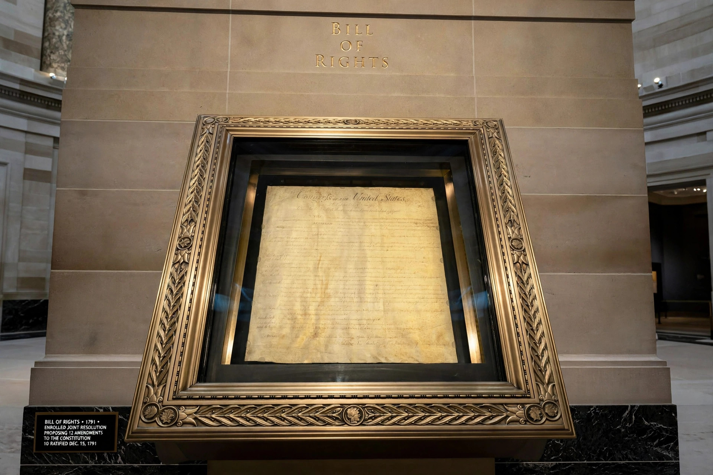

The Second Amendment to the United States Constitution protects the right to keep and bear arms. It was ratified on December 15, 1791, along with nine other amendments comprising the Bill of Rights. The amendment was influenced by the English Bill of Rights 1689 and by Anti-Federalist fears of a federal standing army and of federal disarmament of state militias.
A well regulated Militia, being necessary to the security of a free State, the right of the people to keep and bear Arms, shall not be infringed.
For much of the twentieth century, scholars and courts debated whether the amendment protected an individual right to own firearms or only a collective right connected to service in a state militia. The Supreme Court's earlier principal treatment, United States v. Miller (1939), upheld a federal restriction on sawed-off shotguns on the ground that such weapons lacked a reasonable relationship to the preservation of a well-regulated militia, without squarely resolving the individual-rights question.
The amendment grew out of the ratification debates of 1787–88, in which Anti-Federalists feared Congress might disarm the state militias in favour of a standing army. James Madison drafted the amendment in 1789 as part of the package that became the Bill of Rights, drawing also on state declarations of rights and the English tradition following the Bill of Rights 1689, which had secured to Protestant subjects the right to have arms for their defence.
From Wikipedia, the free encyclopedia.